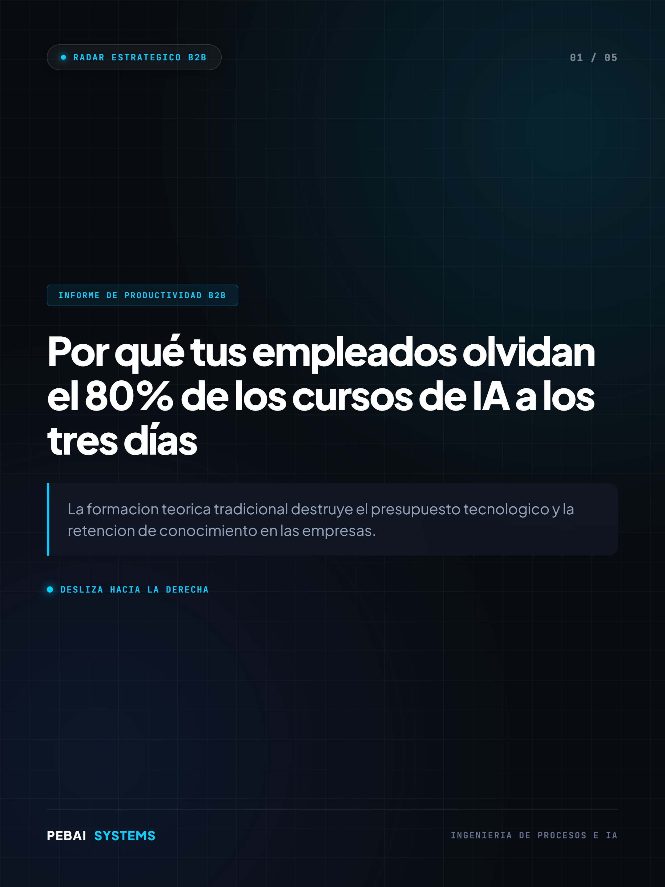
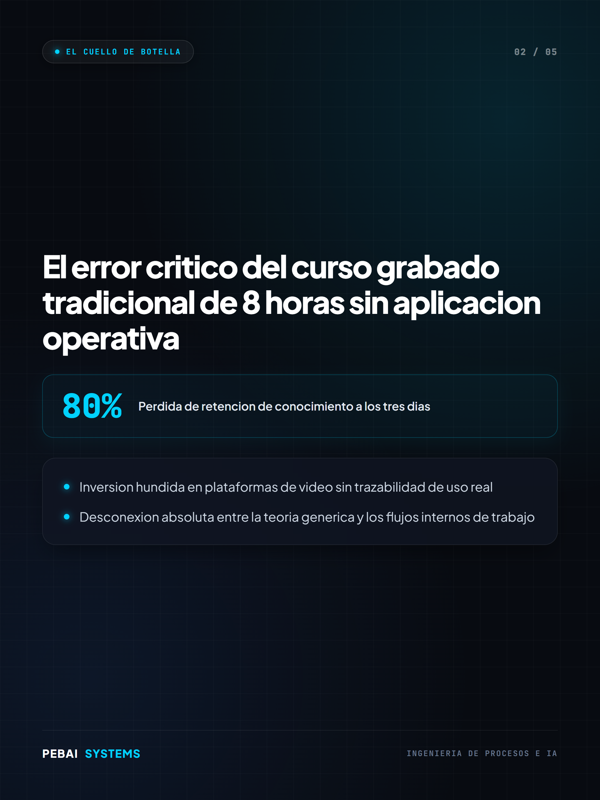
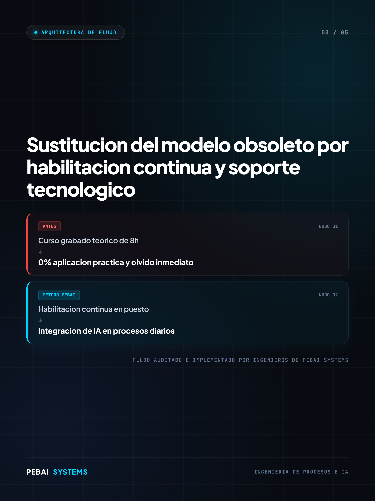
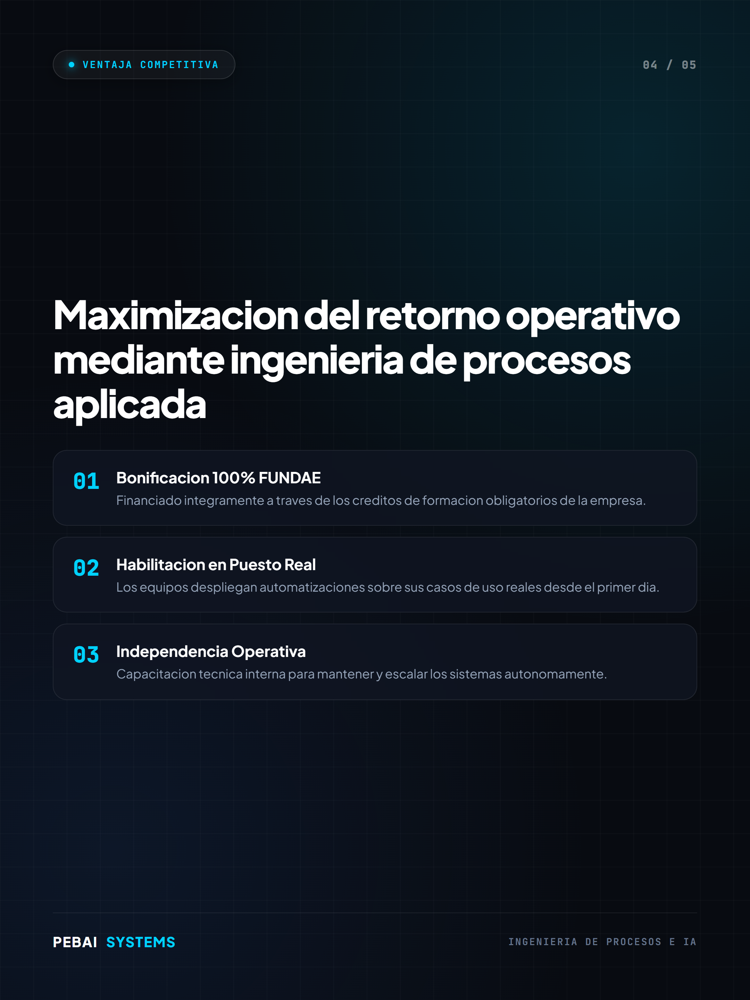
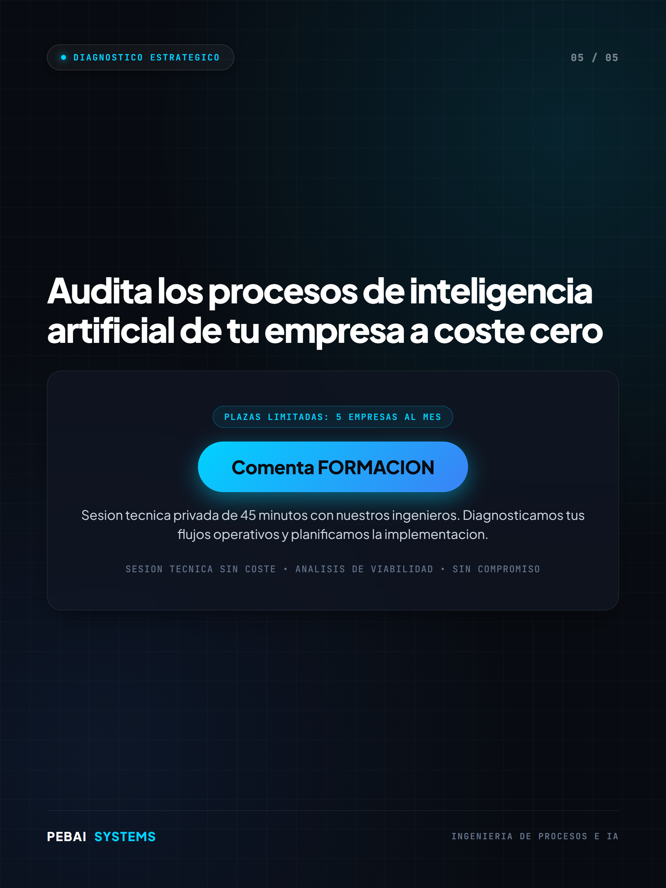

Diapositivas de alta resolucion (guardalas en tu movil en orden 1 a 5):





El modelo de formacion corporativa tradicional ha muerto. Invertir jornadas enteras en cursos grabados genera una perdida de retencion del ochenta por ciento en menos de setenta y dos horas, dilapidando el presupuesto tecnologico de la compania sin transformar la operativa real. En PEBAI Systems hemos rediseñado el paradigma formativo para empresas mediante tres pilares fundamentales: - Transicion absoluta desde la teoria generica hacia la habilitacion tecnologica continua en el puesto de trabajo. - Integracion directa de sistemas de automatizacion e inteligencia artificial sobre los procesos diarios de cada departamento. - Financiacion integra del programa mediante la bonificacion oficial FUNDAE, logrando un coste neto de cero euros para la organizacion. Comenta FORMACION o CONSULTORIA y te enviamos el enlace directo para agendar la auditoria tecnica de tus flujos de trabajo con nuestros ingenieros. #InteligenciaArtificial #PEBAISystems #AutomatizacionB2B #IngenieriaDeProcesos #FormacionBonificada #FUNDAE #ProductividadEmpresarial #TechConsulting #TransformacionDigital #AutomatizacionDeProcesos